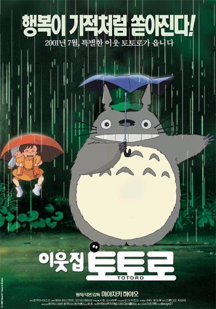

| 1 |
타샤 튜더 |
|
전세계에서 사랑받는 베스트셀러 동화작가이자 <비밀의 화원>, <소공녀>, 백악관의 크리스마스 카드 삽화를 그리고, 30만평 대지를 천상의 화원으로 일구며 자신이 꿈꾸는 대로 삶을 살았던 자연주의자 '타사 튜더'의 이야기 |
클릭 |
| 2 |
로맨틱 홀리데이 |
|
L.A에서 잘 나가는 영화예고편 제작회사 사장인 아만다(카메론 디아즈)는 아름다운 외모에 재력 부족할 것이 없는 그녀에게 맘처럼 되지 않는 연애 문제. 같은 회사에 근무하던 남자친구는 회사의 어린 직원과 바람이 나고, 그녀는 이 모든 상황이 끔찍하기만 하다.
영국 전원의 예쁜 오두막집에 살면서 인기 웨딩 칼럼을 연재하는 아이리스(케이트 윈슬렛). 그녀는 순수하고 착한 심성을 지닌 아름다운 여인이지만, 그녀의 남자친구는 그녀와 만인이 지켜보는 가운데 다른 여자와의 약혼을 발표한다. 마음에 크나큰 상처를 받은 그녀는 자신의 삶에도 변화가 필요하다는 생각을 하게 된다.
6천 마일이나 떨어진 곳에 살고 있던 두 여자는 온라인상에서 ‘홈 익스체인지 휴가’를 보낼 수 있는 사이트를 발견하고 2주의 크리스마스 휴가 동안 서로의 집을 바꿔 생활하기로 계획한다. 각각 L.A와 영국으로 날아간 아만다와 아이리스. 예쁜 오두막집에서 오직 혼자만의 크리스마스를 보내려고 마음먹고 있던 아만다에게 아이리스의 매력적인 오빠 그레엄(쥬드 로)이 불쑥 찾아온다. 첫눈에 호감을 느낀 둘은 조심스럽게 데이트를 시작하지만 그레엄은 자꾸만 아만다와 거리를 두려고 한다.
반면 L.A로 간 아이리스는 아만다의 친구이자 영화음악 작곡가인 마일스(잭 블랙)를 만난다. 푸근한 외모와 따뜻한 유머감각을 지닌 섬세한 감수성의 이 남자와 서로의 감성을 조금씩 이해하며 특별한 감정을 느끼게 되는데. 낯선 여행지, 그러나 왠지 익숙한 이 감정! 진정으로 원하는 삶을 발견하게 되는 특별한 크리스마스 휴가~ 올 겨울, 당신의 가슴을 따뜻하게 적실 최고의 러브스토리가 시작된다. |
클릭 |
| 3 |
노트북 |
 |
17살, ‘노아’는 밝고 순수한 ‘앨리’를 보고 첫눈에 반한다. 빠른 속도로 서로에게 빠져드는 둘. 그러나 이들 앞에 놓인 장벽에 막혀 이별하게 된다. 24살, '앨리’는 우연히 신문에서 ‘노아’의 소식을 접하고 잊을 수 없는 첫사랑 앞에서 다시 한 번 선택의 기로에 서게 되는데… |
클릭 |
| 4 |
이웃집 토토로 |
 |
1955년 일본의 아름다운 시골 마을. 상냥하고 의젓한 11살 사츠키와 장난꾸러기에 호기심 많은 4살의 메이는 사이좋은 자매로 아빠와 함께 도시를 떠나 시골로 이사온다. 자상한 아빠 쿠사카베타츠오는 도쿄에서 대학 연구원이며, 입원 중이지만 따뜻한 미소를 잃지 않는 엄마가 있다. 곧 퇴원하실 엄마를 공기가 맑은 곳에서 맞이하기 위해서다. 숲 한복판에 금방이라도 쓰러질 것처럼 낡은 집을 보며 자매는 새로운 환경에 대한 호기심으로 잔뜩 들뜬다. 사츠키가 학교에 간 뒤, 혼자 숲에서 놀고 있던 메이는 눈 앞을 지나가는 조그맣고 이상한 동물을 발견한다. 그리고 뒤를 쫓아 숲속으로 들어가는데... 미로처럼 꼬불꼬불한 길을 따라가다 큰 나무 밑둥으로 떨어지는 메이. 그곳에서 메이는 도토리 나무의 요정인 토토로를 만난다. 메이는 사츠키가 돌아오지마자 토토로를 만난 것을 자랑하지만 사츠키는 믿지 않는다. 그러나 비가 몹시 쏟아지던 날, 정류장에서 우산을 들고 아빠를 기다리다가 사츠키도 토토로를 만나게 된다.
비를 맞는 토토로에게 우산을 빌려주자 토토로는 답례로 도토리 씨앗을 건넨다. 토토로와의 만남으로 행복감에 부풀어있는 사츠키와 메이. 그러나 그때 병원에서 어머니의 퇴원이 연기되었다는 전보가 온다. 불안해하는 메이는 혼자 엄마를 찾아 병원으로 떠났다가 길을 잃는다. 온 동네를 뒤졌지만 메이는 흔적조차 없고 저수지에선 어린 여자아이의 샌달이 발견된다. 사츠키는 메이를 찾기 위해 애타게 토토로를 부르는데... |
클릭 |
| 5 |
인생 후르츠 |
|
90세 건축가 할아버지 ‘츠바타 슈이치’와 87세 못하는 게 없는 슈퍼 할머니 ‘츠바타 히데코’. 둘이 합쳐 177살, 혼자 산 날보다 함께 산 날이 더 긴 부부는
50년 살아온 집에서 과일 50종과 채소 70종을 키우며 살아간다. 어느 날 슈이치는 설계 의뢰를 받고 늘 꿈꾸던 자연과 공존하는 이상적인 건축의 꿈을 이룰 수 있다는 기대감을 가지게 되는데… |
클릭 |